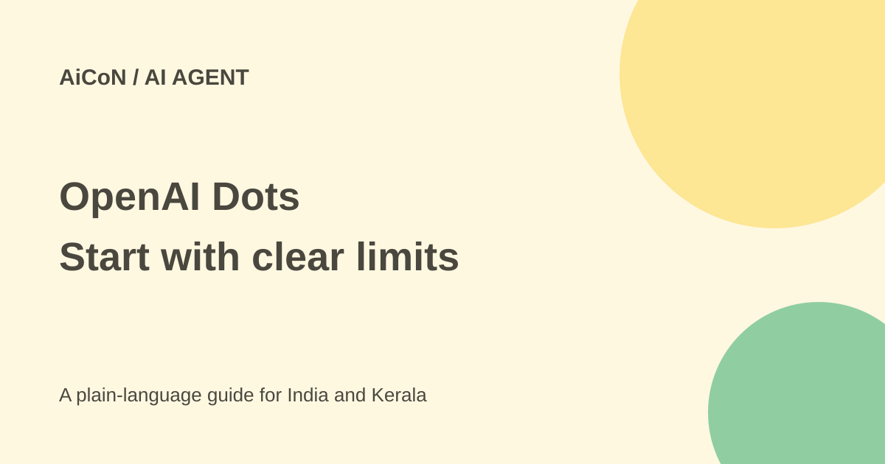

OpenAI Dots: paid access, ongoing tasks and memory controls
Dots are always-on agents in ChatGPT. They can keep working between conversations, but paid-plan access, connected-app permissions and saved context need careful review.

What are OpenAI Dots?
OpenAI describes a dot as an ongoing assistant powered by GPT-6 Astra with its own cloud computer. Instead of answering one question and stopping, it can research, follow projects and bring work back for review. The launch page describes access to more than 4,000 apps through its plugin ecosystem. That is an ecosystem claim, not proof that every app is available in your account.
You can inspect its activity and open its computer. Connecting your own computer is optional and starts turned off. A cloud computer is a separate online workspace; it is not the same as giving the assistant access to your laptop.
Paid access and India
The current help page says dots are rolling out to Pro users outside the European Economic Area, Switzerland and the UK. Business Premium access covers supported ChatGPT regions. Enterprise, Edu and Healthcare workspaces can try the beta when their administrator enables it; it is off by default.
Users must be 18 or older. Access is gradual and can take several days. Indian readers should check the actual feature in their paid account rather than buying a plan solely on the assumption of instant availability. The first dot is included in eligible Pro or Business Premium plans at no extra cost, but the underlying plan is paid. Free, Go and Plus are not listed as launch access routes.
Usage wording differs across official pages. The launch and help pages describe an allowance for deeper work with extended first-month limits; release notes say dots usage will not count toward eligible plan allowances for the next month. Do not interpret either as a permanent unlimited promise. Review your account's current usage terms. Tasks it starts in Codex or ChatGPT Work can use those products' normal limits.
How to set one up carefully
- Use the ChatGPT desktop app or desktop web. The current help page says you cannot create a dot on mobile and mobile web is not supported.
- Read the onboarding permissions and choose a name. Start with a narrow, low-risk responsibility.
- Connect only the apps needed for that responsibility. Existing plugin permissions are shared with ChatGPT and related products, so inspect them too.
- State what it may read, draft or change, and which actions need your review. Name the recipient and content for any message.
- Inspect In progress, Scheduled and Completed activity. Open its computer to check work rather than relying only on a summary.
- Pause it from its profile when you want work to stop. Review connected apps and local-computer access separately.
Messages, calls and local access
The launch describes conversations in ChatGPT, Slack and Teams. Available channels depend on account and workspace settings. The current help page says a dot cannot initiate calls to you at launch. Do not confuse the ability to talk to it with a promise of outbound phone calls.
Texting is a limited beta for Pro users in the US, not an Indian SMS feature and not available in Business or Enterprise workspaces. Message and data charges can apply. Connecting a laptop is a separate choice that can expose local files and work; leave it off unless that task really needs it.
Memory and deletion need attention
Disconnecting an app stops new access but does not delete information already absorbed into a dot's context. The privacy FAQ says individual dot memories cannot currently be viewed, deleted or directly edited. Deleting the dot removes its own context; files, Codex threads and ChatGPT conversations it created are stored separately.
Reset also removes the dot's conversations, saved memories and scheduled tasks, according to the setup help. Review the deletion notice first. Personal-plan model-improvement settings matter; Business, Enterprise and Edu content is not used for model improvement by default. Limited human review can still occur for safety-related cases.
What changed since the original post?
The 30 September post introduced always-on work. This guide adds the desktop-only creation route, age requirement, US-only texting beta, no initiated calls at launch and the important distinction between disconnecting an app and deleting saved context.
Frequently asked questions
Is it free?
No launch free tier is listed. The first dot is included in specified paid plans.
Will buying Pro give instant access?
Not necessarily. The rollout is gradual.
Can I delete just one dot memory?
The current FAQ says no. Review reset and separate ChatGPT memory controls.
Was a dot created for this guide?
No. This guide checks public official sources only.
Sources: Launch and plan scope · Setup and channel limits · Privacy and memory FAQ · Release notes and usage wording. Checked 7 October 2026.